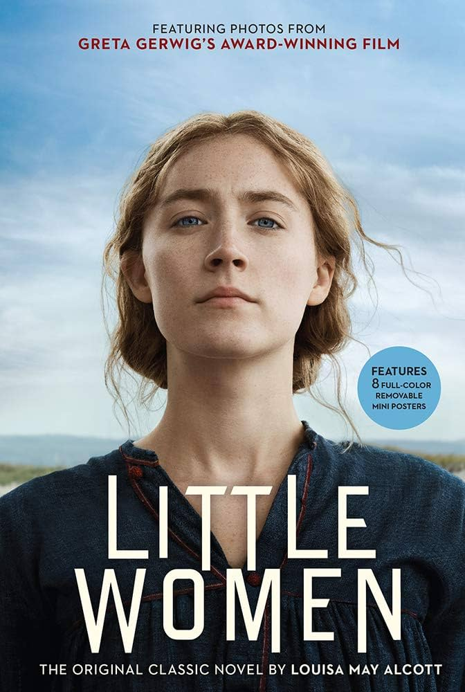
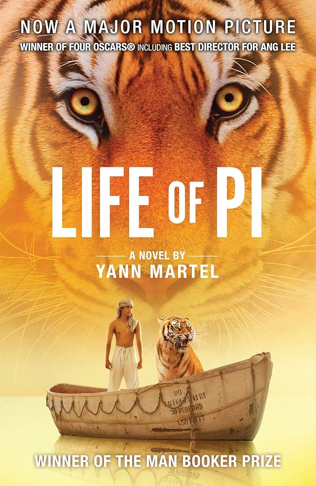
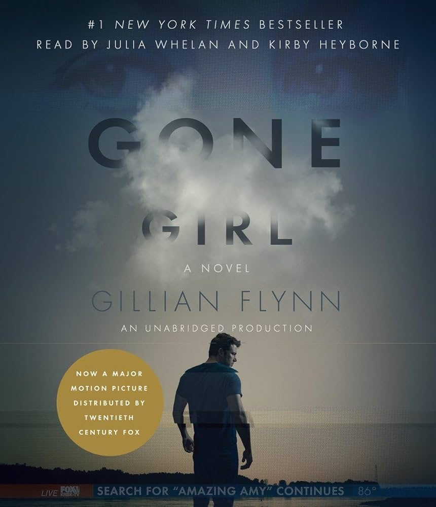
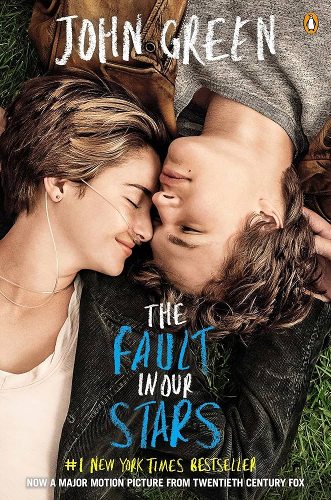
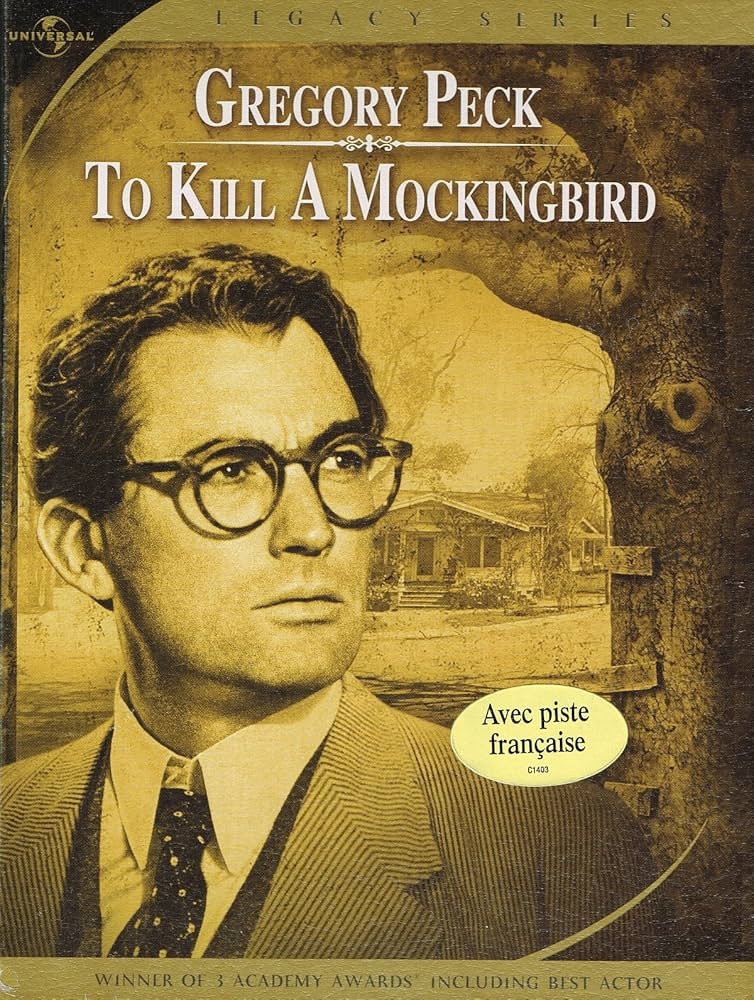
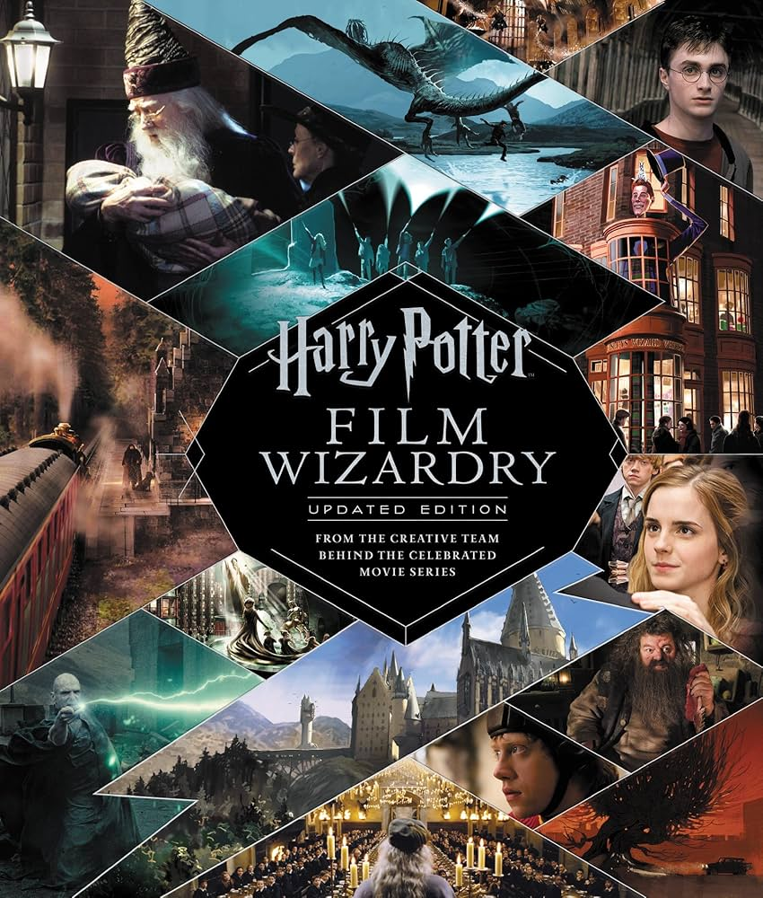
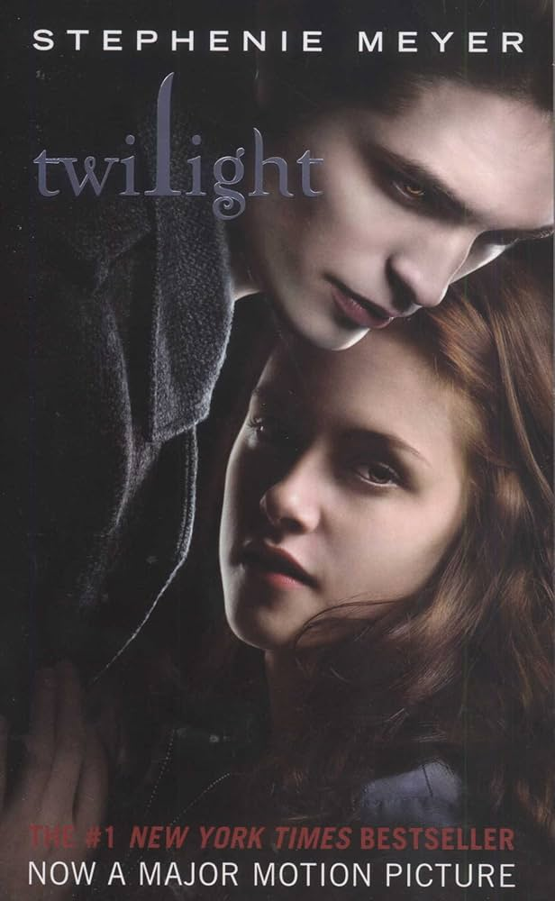
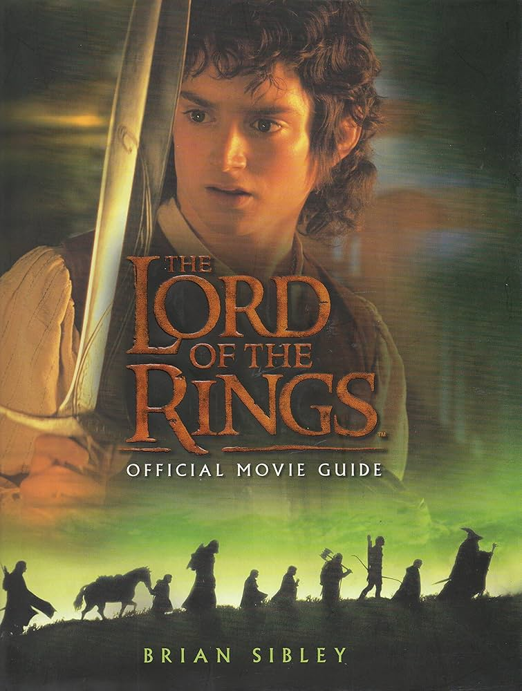

🎞️ Oscar Nominated 🎬
|
 Little WomenRead SummaryThis classic story follows the lives of four sisters—Jo, Meg, Beth, and Amy—growing up during the Civil War. Each sister has her own personality, dreams, and struggles as they navigate family, love, and independence. Through their experiences, they learn about sacrifice, ambition, and personal growth. The story highlights the importance of family bonds and staying true to oneself. |
 Life of PiRead SummaryAfter a shipwreck leaves him stranded in the Pacific Ocean, Pi Patel must survive on a lifeboat with a Bengal tiger. As he battles hunger, fear, and the vast isolation of the sea, he relies on his faith and imagination to stay alive. The journey becomes both a physical and spiritual test of endurance. The story explores survival, belief, and the power of storytelling. |
The MartianRead SummaryAstronaut Mark Watney is left behind on Mars after his crew believes he has died during a storm. Alone and with limited resources, he must use his scientific knowledge and creativity to survive. Meanwhile, NASA works tirelessly to bring him home. The story combines humor, tension, and problem-solving as Watney refuses to give up hope. |
⭐ Critics Favorite ⭐
|
 Gone GirlRead SummaryWhen Amy Dunne disappears on her fifth wedding anniversary, suspicion quickly falls on her husband, Nick. As the investigation unfolds, secrets from their seemingly perfect marriage begin to surface. The story alternates perspectives, revealing shocking twists that challenge what is real and what is not. It is a dark and gripping look at manipulation, trust, and relationships. |
 The Fault in Our StarsRead SummaryHazel Grace Lancaster, a teenager living with cancer, meets Augustus Waters at a support group. Together, they form a deep bond as they navigate illness, love, and the meaning of life. Their journey is filled with humor, heartbreak, and unforgettable moments. The story reminds readers to value the time they have and the people they love. |
 To Kill a MockingbirdRead SummarySet in the American South, the story follows Scout Finch as her father, Atticus, defends a Black man falsely accused of a crime. Through Scout’s eyes, readers witness themes of racism, justice, and moral courage. As she grows up, she begins to understand the complexities of human behavior and fairness. The novel remains a powerful commentary on empathy and integrity. |
🍿 Box Office Hits 🍿
|
 Harry PotterRead SummaryHarry Potter discovers on his eleventh birthday that he is a wizard and is invited to attend Hogwarts School of Witchcraft and Wizardry. There, he makes close friends, learns magic, and uncovers secrets about his past. As he faces challenges and danger, he begins to understand his connection to a powerful dark wizard. The story is filled with adventure, friendship, and discovery. |
 TwilightRead SummaryBella Swan moves to a small town and becomes fascinated by Edward Cullen, a mysterious and distant classmate. She soon discovers that he is a vampire, which makes their relationship both romantic and dangerous. As Bella is drawn deeper into Edward’s world, she must face the risks that come with loving someone supernatural. The story combines romance, suspense, and fantasy. |
 The Fellowship of the RingRead SummaryFrodo Baggins is given the dangerous task of carrying a powerful ring that could destroy the world if it falls into the wrong hands. Alongside a group of companions, he begins a journey across Middle-earth to reach Mount Doom. The group faces enemies, danger, and difficult choices along the way. The story focuses on courage, friendship, sacrifice, and the battle between good and evil. |